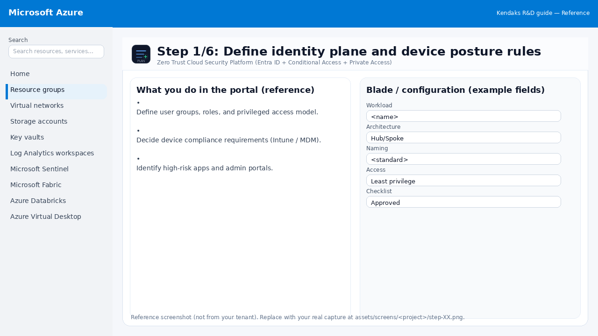
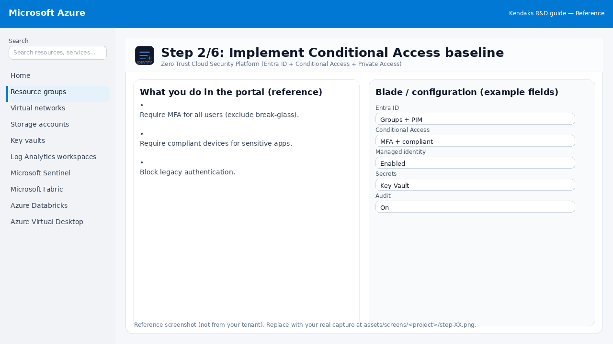
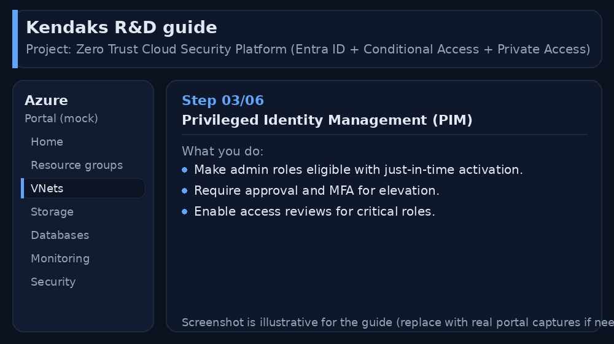
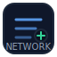
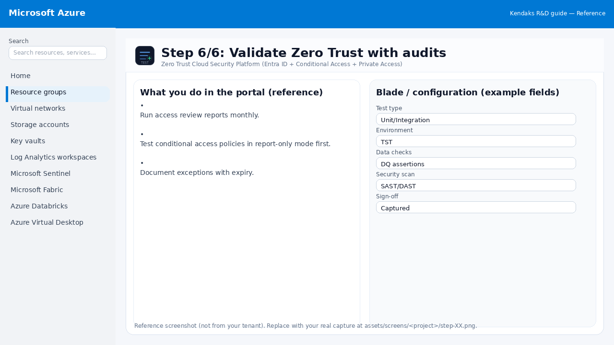

Zero Trust Cloud Security Platform (Entra ID + Conditional Access + Private Access)
Category: Security
Scenario: Enterprise requires Zero Trust for cloud apps and admin access. Example: 'Kendaks Enterprise' enforces MFA, device compliance, and least privilege for all workloads.
Architecture diagram
High-level view of the main components and data/control flows.
Low-level architecture diagram (Visio-style)
Implementation view (networking, security, ops). Click to open full size.
Low-level architecture details
(No low-level text provided.)
Step-by-step implementation
Step 1/6
Define identity plane and device posture rules

Reference portal screenshot (click to zoom). Replace with your tenant capture if needed.
Define user groups, roles, and privileged access model. Decide device compliance requirements (Intune / MDM). Identify high-risk apps and admin portals.
Validation checklist
Stakeholders have signed off the scope, SLAs, and data/security requirements. You have documented naming standards, environments, and ownership (RACI).
Step 2/6
Implement Conditional Access baseline

Reference portal screenshot (click to zoom). Replace with your tenant capture if needed.
Require MFA for all users (exclude break-glass). Require compliant devices for sensitive apps. Block legacy authentication.
Validation checklist
Entra groups/roles are configured; privileged roles protected via PIM. Conditional Access/MFA policies are enforced for relevant access paths.
Step 3/6
Privileged Identity Management (PIM)

Reference portal screenshot (click to zoom). Replace with your tenant capture if needed.
Make admin roles eligible with just-in-time activation. Require approval and MFA for elevation. Enable access reviews for critical roles.
Validation checklist
Security baseline applied (Defender/Policy/WAF/Firewall rules as applicable). No public endpoints unless explicitly approved; private endpoints verified where applicable. Alerts are configured for high-risk events.
Step 4/6

Reduce exposure with Private Link and segmentation
Reference portal screenshot (click to zoom). Replace with your tenant capture if needed.
Use private endpoints for PaaS (SQL, Storage, Key Vault). Adopt hub-spoke and restrict east-west traffic. Apply WAF for public entry points.
Validation checklist
The target VNet/subnets/peerings/UDRs/NSGs are deployed with no errors. Connectivity test passes (e.g., Network Watcher connection troubleshoot / ping between subnets where allowed). Egress is controlled (traffic observed in Firewall logs if applicable).
Step 5/6
Threat detection and response
Reference portal screenshot (click to zoom). Replace with your tenant capture if needed.
Send sign-in logs to SIEM. Enable identity protection alerts. Automate account disable/reset on high risk.
Validation checklist
Logs and metrics are flowing (check Log Analytics / Monitor). Alerts trigger correctly (test alert path to email/Teams/ITSM).
Step 6/6
Validate Zero Trust with audits

Reference portal screenshot (click to zoom). Replace with your tenant capture if needed.
Run access review reports monthly. Test conditional access policies in report-only mode first. Document exceptions with expiry.
Validation checklist
UAT completed with representative users and scenarios. Performance meets baseline; issues tracked and remediated.